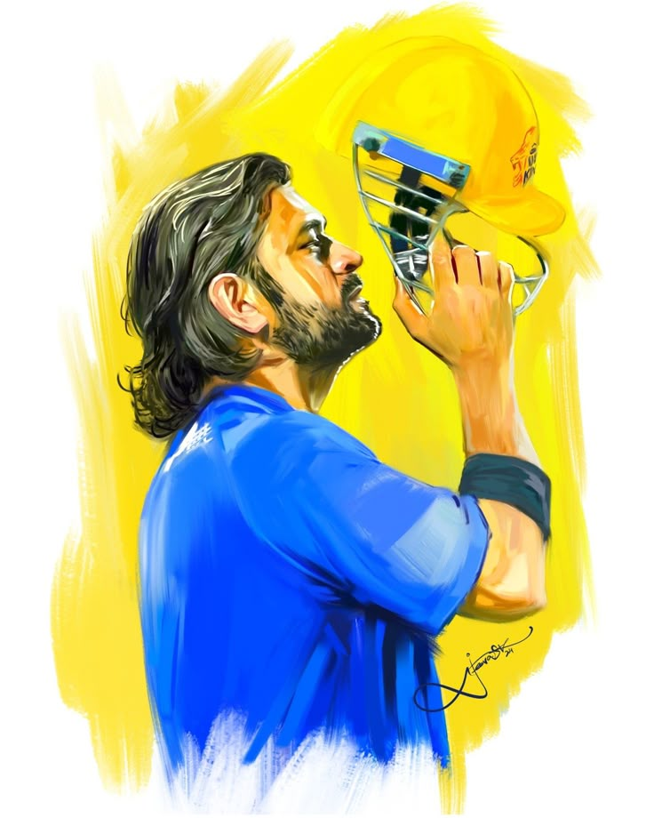
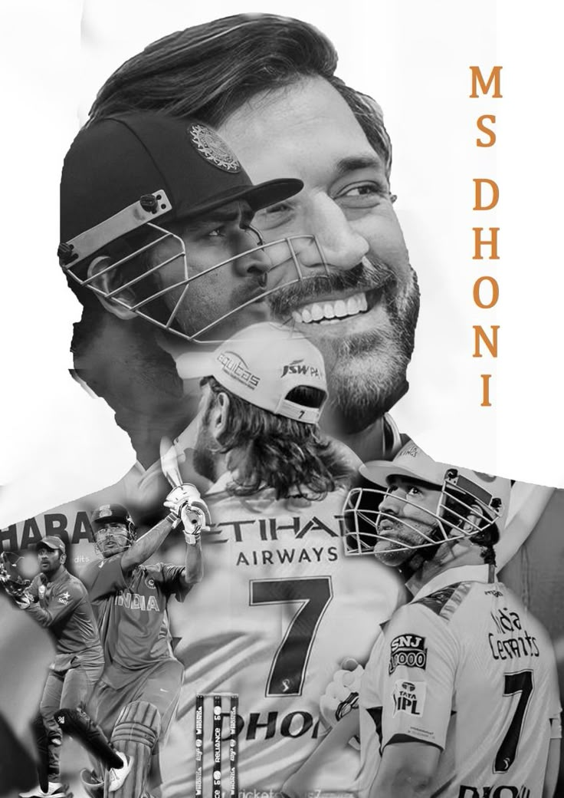

Mahendra Singh Dhoni (MS Dhoni) | The Legend of Indian Cricket
 about
-
Early Life & Background
Mahendra Singh Dhoni, popularly known as MS Dhoni, was born on July 7, 1981, in Ranchi, Jharkhand, India. Before becoming a cricketer, he was a goalkeeper in football and also played badminton at the state level. However, his wicketkeeping skills were noticed, and he soon switched to cricket.
-
Rise to Stardom
Dhoni made his international debut for India in 2004 against Bangladesh. Though he got out for a duck in his first match, he soon made a mark with his explosive batting style. His breakthrough came in 2005 when he scored a blazing 148 against Pakistan.
-
Captaincy & Achievements
Dhoni was appointed as the captain of the Indian team in 2007, and under his leadership, India achieved several historic victories:
1. 2007 T20 World Cup 🏆 : Led a young Indian team to victory in the inaugural T20 World Cup.
2. 2011 ICC Cricket World Cup 🏆 : Ended India’s 28-year World Cup drought with a legendary "Captain Cool" knock of 91 (not out) in the final* against Sri Lanka.
3. 2013 ICC Champions Trophy 🏆 : Became the only captain to win all three major ICC tournaments.
4. Rise of CSK in IPL 🏆 : Led Chennai Super Kings (CSK) to multiple IPL titles, becoming one of the most successful IPL captains. -
Playing Style & Legacy
Known for his cool and calm nature, earning him the nickname "Captain Cool". Revolutionized finishing matches with his calculated aggression. One of the best wicketkeeper-batsmen in the world, known for lightning-fast stumpings. Introduced the famous "Helicopter Shot", a unique way to hit yorkers for six.
-
Retirement & Beyond
Dhoni retired from Test cricket in 2014. On August 15, 2020, he announced his retirement from international cricket, leaving a lasting legacy. Continues to play in the IPL for CSK, inspiring millions.